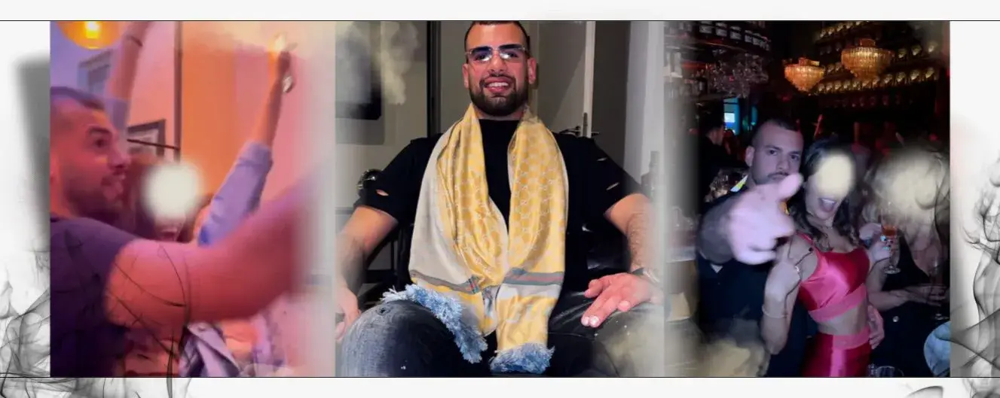
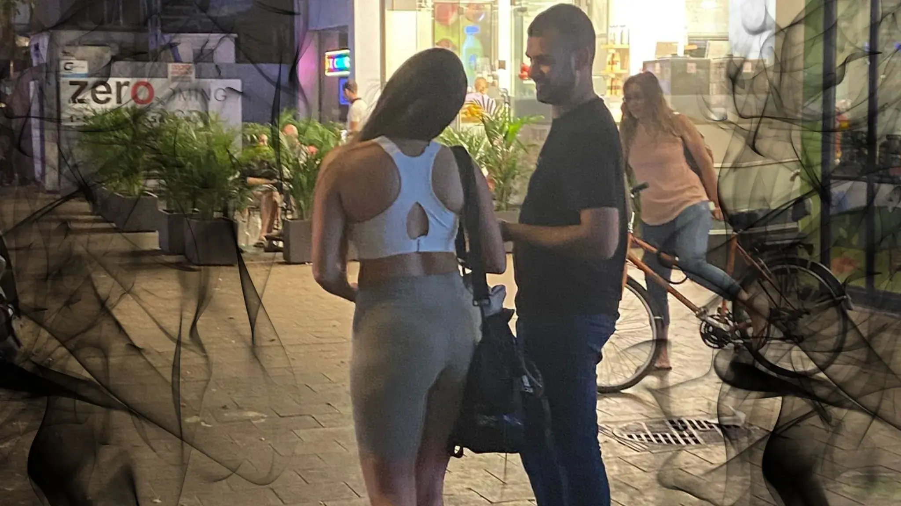
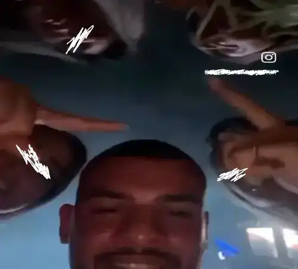
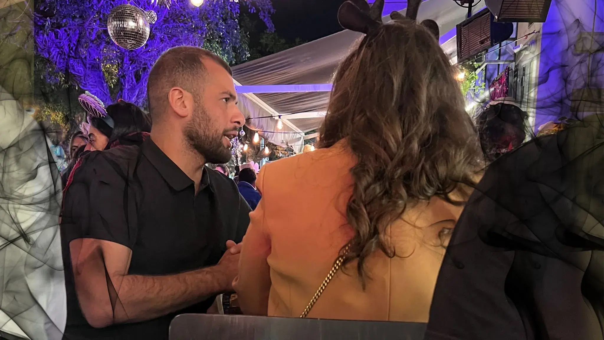
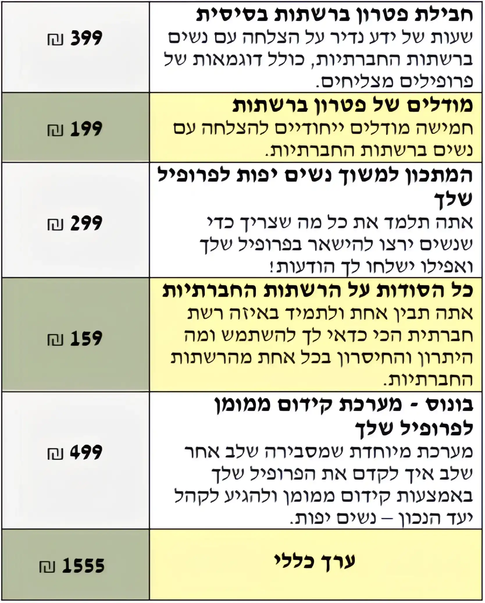
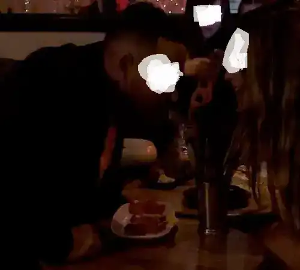
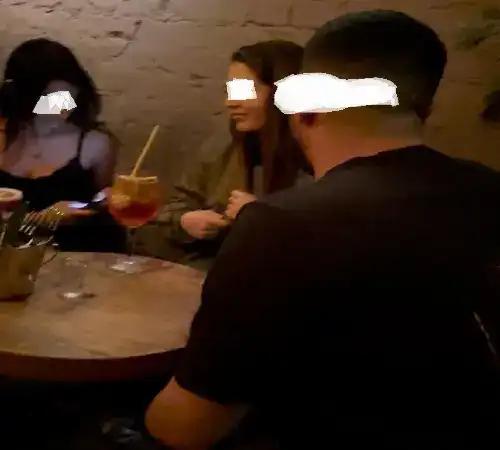
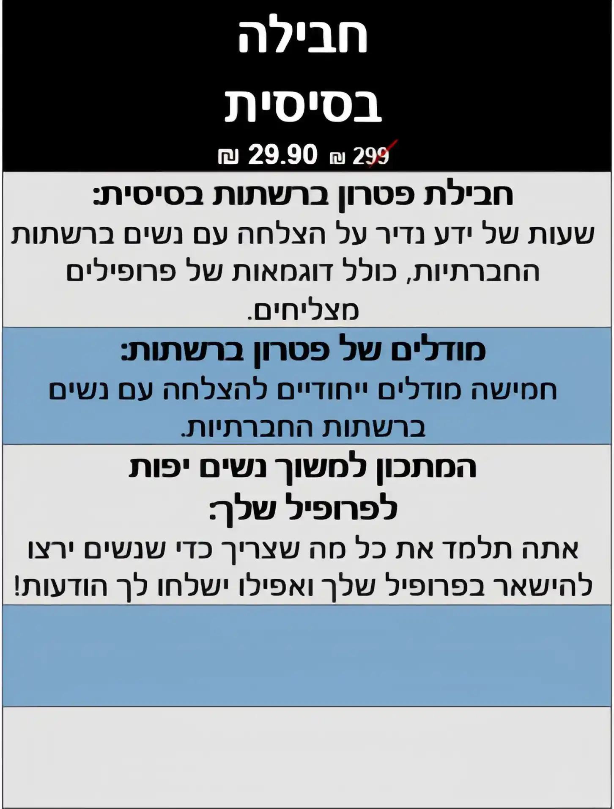
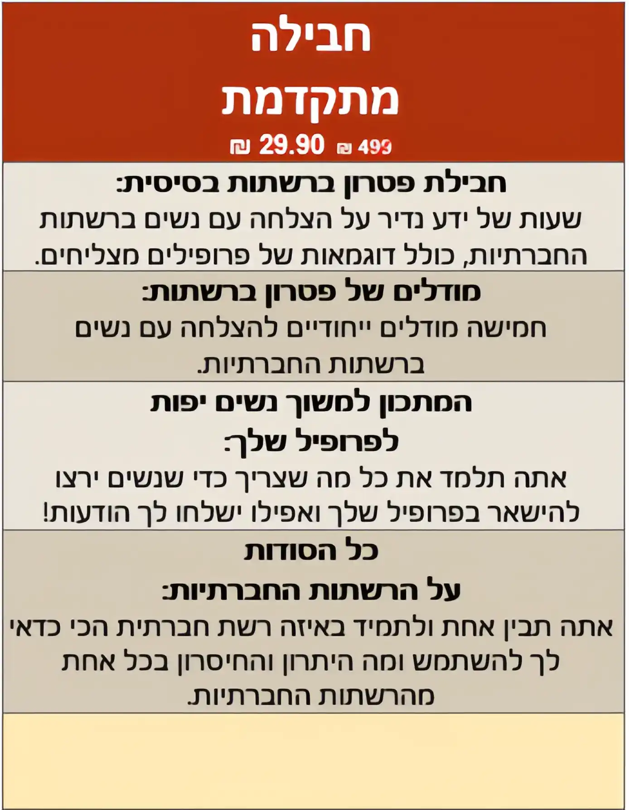
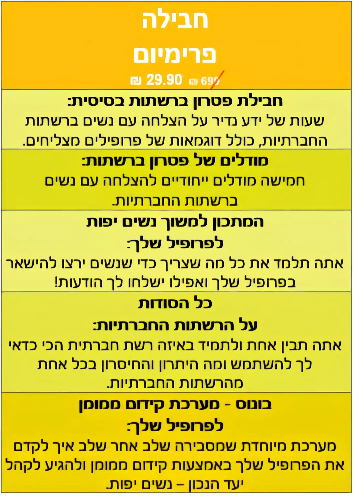

השיטה המקיפה שלי למגנט נשים יפות לחיים שלך ברשתות חברתיות
אנחנו כאן כדי לעזור לך להוציא את המקסימום מעצמך ומהמשחק שלך
המוצר הטוב ביותר לשליטה במשחק הפנימי שלך, היישום שלו בפועל והעוצמה שלו שישמשו אותך לכל החיים

✓להכיר את דרכו של הבוס שמצליח עם נשים
✓להכניס נשים יפות לחיים שלך
✓פיצחנו את הקוד של עולם הדייטינג ברשתות חברתיות
✓פיתוח הכישורים החברתיים שלך
היי, כאן דולב,
הכל התחיל לפני עשר שנים,
כל ערב של יציאה, כל בחורה מהממת, כל בדיחה סופר מצחיקה, ואפילו כל כישלון גרמו לי להרגיש
בחיים.
הצעדים הראשונים שלי לאורך הדרך הזאת היו מלאים בהרבה כאב.
אני הייתי ביישן, מופנם, ומעבר לכל זה היו לי בעיות עם קשרים חברתיים ויצירת חברים חדשים. אני זזתי ממקום למקום הרבה מאוד ותמיד אנשים התגרו בי. אני תמיד הרגשתי מוזר, בודד, ומחוץ לחבורה - ככל שניסיתי להתיידד עם אנשים חדשים ככה זה נהיה גרוע יותר.
הבחורה הראשונה שאהבתי נתנה לי סטירה בפנים, הבחורה הראשונה שניגשתי אליה הביאה לי מספר מזוייף, והחברה הראשונה שהייתה לי לא רצתה לקיים איתי יחסי מין אפילו.
החברים שהקיפו אותי התחילו להתעלם ממני, אני הרגשתי בסוף נטוש, ונדחפתי חזרה עמוק עמוק אל תוך הראש שלי.
כשסוף סוף התחלתי לצאת - ביליתי את השנתיים הראשונות שלי…
לבד.
התמודדתי עם דחייה על גבי דחייה על גבי דחייה - וזה היה פשוט מדכא.
בשלב הזה של החיים כבר התרגלתי לכאב - ובגלל שהתחלתי ממקום כל כך נמוך - הדחייה הייתה טובה מכלום.
למרות המאבק העצום שהיה לי עם עצמי, המשכתי ללכת המשכתי בדרך.
והסיבה הייתה - הייתה לי
מטרה גדולה... לא הייתה לי ברירה אחרת.
לא יכולתי להסתובב, כי לא היה לי למה לחזור.
כל מה שרציתי זה להתקבל, להרגיש נאהב, להיות מסוגל ליותר, לדעת להתחבר לסובבים אותי ולרכוש חברים אמיתיים.
יצאתי ויצאתי, לילה אחרי לילה, דחפתי את עצמי חזק יותר וחזק יותר.
ואז, אחרי אינספור לילות ללא שינה ויציאות... סוף סוף יש לי חברה.
העניין הוא, שלמרות ש"הייתה לי חברה", היא לא קיימה איתי יחסי מין!
כנראה זה הדבר הכי עצוב שראית אי פעם, אבל זאת הייתה המציאות שלי.
הנה אני, הבחור הנחמד והחנוני הזה…
והחברה
שלי
לא רוצה לעשות איתי סקס, זה היה באמת - פתטי.
עכשיו כשאתה קורא את זה אתה בטח שואל את עצמך:
״מה זה משנה בכלל?״
זה משנה, כי אתה משנה.
״כמה שהבעיה יותר אישית ככה היא יותר אוניברסלית״
הדברים שאתה עובר עכשיו הם בדיוק הדברים שאני עברתי.
אותם המאבקים, אותם תלאות וקשיים שאתה מתמודד איתם היום - אני התמודדתי בעבר.
הסיפור שלי הוא הסיפור שלך.
ומתוך הדחיות והנפילות האלו, אני למדתי שיעורים קריטיים בחיים שלי שיש לי את הפריוילגיה לשתף איתך היום.
זאת היתה התשוקה שלי ללמד בשילוב עם הסיפור האישי שלי, ובשילוב עם כוח ויכולת אין סופית לשנות את החיים שלך שגרמו לי להבין:
אני חייב לשתף את זה!
וזאת בדיוק הסיבה שיצרתי את:
פטרון ברשתות

אני אגיד לך בדיוק מה הוא פטרון ברשתות, ולמה הוא חשוב לך כל כך בנקודה שבה אתה נמצא עכשיו, אבל קודם כל:
אני אסביר לך למה יצרתי את פטרון ברשתות, כדי שתוכל סוף סוף להבין איך אתה משתלב בכל המסע הזה, ולמה זה רגע כל כך קריטי בשבילך.
כשהיית צעיר היה לך את זה…
את ההרגשה הזאת של כוח בלתי ניתן לעצירה, אפשרויות אין - סופיות, ההרגשה הזאת של הרפתקה חסרת מעצורים.
ההרגשה שיש עולם חדש ממש לפניך, מוכן שתכבוש אותו.
החלומות שלך היו מהדהדים לך בראש כמו כדורי פינג - פונג, הדמיון שלך יקח אותך למקומות שאחרים רק יוכלו לחלום עליהם.
ובכל זאת, איפה שהוא בדרך שלך משהו קרה…
אתה איבדת את זה.
את התחושה הזאת של המשחק, התחושה הזאת של הכיף, את התחושה של האישור…
התחושה הזאת שאפשר, של להפוך להיות גדול, עוצמתי, בלתי ניתן לעצירה…
התחושה הזאת של להיות הגבר הטוב ביותר שאתה יכול להיות.
אתה איבדת את זה, בגלל שהחיים נתנו לך בוקס בפנים.
אולי זאת היתה העבודה הזאת שלא הצלחת להשיג..
אולי זאת היתה הבחורה הזאת שאתה פשוט לא הצלחת להבין אותה…
אולי זאת היתה ההזדמנות הזאת שחלפה ונעלמה..
זה זעזע אותך, גרם לך לטראומה, נתן לך סטירה לפנים וניער אותך מהמציאות שאתה נמצא בה.
זה גרם לך להרגיש שהתקוות האלה, החלומות האלה, התשוקות האלה, לא היו אמיתיות, זה גרם לך להאמין שהשאיפות שלך היו מדומיינות, זה גרם לך להאמין שלא מגיע לך את זה.

זה הפיל אותך למטה, רימה אותך.
כישלון ועוד כישלון הגיע ונבנה… אחד אחרי השני… כל פעם שניסית, נכשלת… עוד פעם ועוד פעם ועוד פעם.
עד שבסוף, אתה פשוט לא האמנת בזה יותר.
החלומות האלה, התשוקות האלה, התקוות האלה - הם פתאום הפכו לפנטזיה רחוקה - משהו שחשבת עליו המון אבל לעולם לא יישמת אותו.
זה היה מסוכן מידי, ללא סיכוי, זה הפך אותך לחסר אונים ולא יכולת פשוט ״ללכת על זה״.
פצע חדש נפתח, פצע נפשי שקישר את המושג ״לרדוף אחרי החלומות שלך״ ל -
״כאב״
- בתוך הראש שלך.
כמה שניסית להתעלם מזה, כמה שניסית להתחמק מזה, ככה זה נהיה יותר עוצמתי ומכאיב.
וזה הרס אותך.
זה הרס אותך בתור גבר.
זה הרס אותך בתור אישיות.
זה הרס אותך בתור בן אדם.
אתה איבדת את מושב הכוח שלך בתור גבר…
אתה איבדת את החשק להתגבר על קשיים…
אתה איבדת את התשוקה שלך להלחם בכל מכשול בדרך שלך…
הכאב ניצח אותך, והוא שקע עמוק…
כל כך עמוק שאפילו שאתה יושב כאן, עכשיו, וקורא את זה - אתה לא מרגיש אותו שם.
זה כאב שקשה מידי להתמודד מולו לבד, בגלל שכאשר אתה מתבונן עמוק, כאשר אתה מסתכל לו ישר בעיניים זה שורף.
זה כאב שבולע אותך, מטביע אותך, ושולט בך - גם אם אתה מודע לכך וגם אם לא.
זה כאב שאתה אוליי אפילו לא הבנת שהוא קיים, או כאב שאתה מזמן כבר שכחת אותו.
זה כמו הזמזום של המקרר ברקע.
זה שם, עמוק בפנים… וזה משפיע על כל דבר שאתה עושה.
כמו שאתה יודע, המסע שלי היה מלא בכאב, בדחיות, בקשיים, ובאתגרים תמידיים וזאת הסיבה שהייתי חייב ליצור את פטרון ברשתות
פטרון ברשתות
זה הגדרה של
המשחק הפנימי
שלך
״איך המשחק הפנימי נראה?״
…זאת שאלה שבחיים לא תצטרך לשאול את עצמך יותר.
כאשר אתה מתחבר באמת אל המשחק הפנימי שלך, המשחק החיצוני שלך כבר מסתדר מעצמו.
אתה תדע בדיוק מה זה, איך זה נראה, איך זה מרגיש, ובדיוק מה שאתה צריך לדעת כדי לפעול ברמה הכי גבוהה שיש, גם פנימית, וגם חיצונית - בכל זמן.
פטרון ברשתות זאת חבילת הכל -כלול - מלאה בפוטנציאל, אמת בסיסית מעוררת השראה של התפתחות אישית.
כל התוכן מבוסס על נקיטת - פעולות, ומוגש לך בסגנון כזה שתוכל להבין, ליישם, ולהפיק תועלת ממנו מיידית.
פטרון ברשתות הוא כלי שאתה תוכל תמיד ליישם אותו עוד פעם אחר פעם במהלך החיים שלך.
זהו סיפור גבורה בקופסא, והוא יעבוד בשבילך יום אחרי יום במהלך המסע שלך.
להשיג את הבחורות זה רק ההתחלה.
פטרון ברשתות ידחוף אותך מעל ומעבר לאמת הכללית שלך, ויביא אותך קרוב למושב הכוח שלך בתור גבר.

בתוך
פטרון ברשתות
, אנחנו לא רק באים לגרד את פני השטח, אנחנו הולכים לצלול עמוק לרעיונות שמשפיעים על כל חלק בחיים שלך, כך שתוכל להבין לעומק ולהפנים את מושגי היסוד, את המורכבויות שלהם, ואת היישום שלהם.
אינסטינקטים קדומים
פטרון ברשתות יתקין את האינסטינקטים הקדומים האלו עמוק לתוך תת - המודע שלך, ויעניק לך שליטה תת - הכרתית בכל צד של המשחק.
המשחק הפנימי זה אומר שיש לך את התגובה הנכונה לכל סיטואציה.
עם פטרון ברשתות , אתה תעשה את הדבר הנכון, בזמן הנכון, ובכל זמן.
דרך חיים
פטרון ברשתות יכסה את כל ה״זוויות״ השונות של להיות גבר אמיתי - מאורח חיים איכותי, לאופנה, בריאות , קשרים אנושיים, וכמובן איך להשיג את הנשים הכי לוהטות (כוסיות) בסביבה.
להיות גבר זה לא רק הבחורות, אבל, הבחורות שאתה משאיר בחיים שלך הם ההשתקפות שלך בתור גבר - עם פטרון ברשתות, אתה תוכל להקיף את עצמך לא רק עם כמות - אלא גם עם איכות.
אינטליגנציה רגשית
פטרון ברשתות יקנה לך את היכולת להיות עירני, לשלוט, ולבטא רגשות של אחרים, ולהתמודד עם מערכות יחסים בין אישיות בצורה נבונה ואמפתית.
אינטליגנציה רגשית היא המפתח להצלחה גם האישית וגם המקצועית, ואמפתיה זה המפתח למשחק של ה9 וה10 - כאשר אתה מבין את העולם שלה, היא תיכנס לעולם שלך בצורה מיידית.
עם פטרון ברשתות...
אתה תחסוך שנים מעקומת הלמידה שלך, אתה תחסוך שנים על גבי שנים של ניסוי - וטעייה, כישלון, ואכזבה.
אתה תבין איך להשיג יותר תוצאות בפחות מאמץ, וגם לעשות הרבה כיף בתהליך!
אתה תגלה את כל השכבות של ההתניה החברתית, תפרק לגמרי את השרשראות החלושות של הנעורים ותושיב את עצמך מחדש בכס המלכות המגיע לך כמלך במציאות שלך.
פטרון ברשתות יהיה…
פטרון ברשתות יתקין בתוך התת מודע שלך אינסטינקטים ראשוניים, שיהפכו את המשחק שלך לחלק וחסר מאמץ.
פטרון ברשתות יתמקד וינעל בך את אורח החיים שאתה רוצה שיהיה לך, וישאב אותך לתוך חוויות שהולכות להפוך את החיים שלך למהנים יותר, למרגשים יותר, ומספקים יותר.
פטרון ברשתות יעזור לך לפתח את האינטליגנציה הרגשית שאתה צריך כדי להיות תמיד מוביל באינטראקציה, ויגרום לך להגיע לדינמיקות המתקדמות ביותר במשחק.
עם פטרון ברשתות…
עם פטרון ברשתות, מערכות היחסים הרעילות שלך יעלמו לגמרי ויתמוססו, אתה תמצא את עצמך מתפתח, ומושך אלייך אנשים טובים יותר אל המציאות שלך.
עם פטרון ברשתות, הליבה הבסיסית שלך כגבר תבנה מחדש, תתמקד מחדש, ותתבסס מחדש - תאפשר לך להיות 100% בטוח בכל פעולה שתעשה.
עם פטרון ברשתות, המשחק שלך יתקדם לשלב הבא, וידחף אותך מעבר לקצה גבול היכולת שלך, וימתח אותך למעלה לתוך מימד אחר של הצלחה.
זה מה שתמצא בתוך פטרון ברשתות

פטרון ברשתות
יביא אותך פנים מול פנים עם הפחד הזה, עם הכאב הזה, ויתן לך את הכוח לנצח אותו.
פטרון ברשתות
אתה כבר לא לבד, יש לך את התוכן לצידך שיעזור לך להתמודד עם המצוקה.
פטרון ברשתות
יקח אותך חזרה אל מושב הכוח שלך בתור גבר, אנחנו נחזיר אותך חזרה להתחבר לגבריות הזאת שפעם הייתה לך.
פטרון ברשתות הולך...
לנפץ את האמונות המגבילות שלך לגבי עצמך...לגבי העולם הסובב אותך...ולגבי מה בכלל אפשרי להשיג...
פטרון ברשתות
תחזיר את הכוח שלך כגבר חזרה לכף היד שלך...כדי שאתה תוכל להתקדם קדימה כל יום, כל דקה, כל רגע – כשאתה יודע שזה נמצא ממש שם ביחד איתך.
פטרון ברשתות
תתחיל דרך חדשה של הצלחה שהולכת לעבוד לך, בכל זמן אפשרי.
כשזה מגיע ל
פטרון ברשתות
, זה בדיוק ככה:
אין יותר דבר כזה ״הצלחה מדומה״, או ״נקיטת - פעולות מסובכות.״
זה או שאתה עושה את זה, או שאתה לא.
זה או שאתה משיג את התוצאות שאתה רוצה, או שלא.
זה או שאתה משיג את הבחורה, או שאתה לא.
תפסיק לשקר לעצמך, תפסיק להתפשר, ותפסיק לבזבז את הזמן.
זה לא משנה איפה אתה נמצא עכשיו…
אם אתה רק מתחיל…
זה אומר ש…
אתה נמצא בהתחלה של המסע שלך, אתה לומד, אתה רעב להתקדם, ומתרגש ללמוד רעיונות חדשים.
כל צעד שאתה עושה זאת חוויה מרגשת מלאה בהזדמניות חדשות, קשיים, ותגליות חדשות.
אתה נכשל המון.
זה יכול להיראות מתסכל, כי ככל שאתה יוצא יותר, ככה זה מרגיש שאתה דופק את הראש שלך בקיר.
אתה לומד מהר, אבל זה לפעמים מרגיש כאילו שאין לך ממש את התמונה המלאה בראש של מה זה ״להיות טוב״ באמת.
פטרון ברשתות יתן...
תתחיל את
טקס המעבר שלך כגבר
, ותקים תשתית מוצקה שעליה כל משחק טוב עתידי יבנה, זה יתן לך את הכוח לדחוף כלפי מעלה את עקומת הלמידה שלך, כי אתה תדע שאתה בונה על גבי בסיס יציב.
תשים דגש על כך ש
כשלון
הוא
למידה
.
זה נראה מובן מאליו כשאתה שומע את זה פעם ראשונה, אבל פטרון ברשתות יבסס בשבילך מערכת חדשה שתהפוך את התהליך של ״להיכשל קדימה״ יותר טבעי, ויאפשר לך למנף את זה כדי להיות יותר טוב ולהשיג תוצאות טובות יותר.
תאיץ את עקומת הלמידה שלך ותתקין בך תוכנית של משחק טוב.
אתה תדע בדיוק איך משחק טוב נראה, ואיך להיות עם התגובה הרגשית הנכונה לכל סיטואציה, בכל זמן.

אם אתה ממוצע…
זה אומר ש…
אתה יוצא המון, ו״גיבשת תוכנית״ בתוך המגרש.
יום אחרי יום אתה דוחף את עצמך קדימה, מתמודד מול קשיים, דחיות, וקשיים ראש בראש.
אתה ״נכשל קדימה״ בהצלחה, אבל בדרך כלל אתה עייף או גמור אפילו כי אתה סומך על כוח רצון ומאמץ לדחוף את עצמך מתוך ההתנגדות.
אתה לומד בקצב קבוע, ומפתח את ההרגשה לאיך נראה הסטייל של המשחק הספציפי שלך, ומה הם החוזקות והחולשות שלך.
פטרון ברשתות יתן...
ישחרר אותך מהתבנית הזאת של ״לסבוב את הגלגלים בבוץ״, פטרון ברשתות יהפוך שוב פעם את היציאות והמשחק של הבחורות להנאה, וכל מכשול שתתמודד איתו הופך להזדמנות שאתה מקבל כדי להיות אפילו טוב יותר ממה שהיית אי פעם.
יישר אותך אל עבר היעוד האמיתי שלך ואחר כך יאיץ לך את התוצאות.
פטרון ברשתות ישמיד את השחיקה ויקל את הלחץ של ״החובה לצאת״ - אתה תבין את המשמעות הגדולה יותר שלך ותכלול את ההתנגדות כחלק מהתהליך - תהנה ממנו אפילו.
יאיץ לך את עקומת הלמידה, יגביר את החוזקות שלך, ויראה לך איך למלא את החסר בחולשות שלך.
אתה פשוט ״תבין את זה״ כשמדובר ברעיונות קריטיים.
במקום שתהיה חייב לצאת ושוב ושוב לעמול על המיומנויות שלך, אתה כבר תהיה מסוגל להבין את זה אחרי אחד או שתי יישומים, שומר לך טונות של זמן ומאמץ בטווח הרחוק.

אם אתה מתקדם…
זה אומר ש…
אתה יצאת בחוץ, אתה ניסית, אתה יישמת, אתה למדת, ואתה השגת תוצאות אופטימליות… אבל אתה תקוע במצב של ״מה עכשיו?״ - אולי המשחק הפך טיפה מיושן, אולי אתה איבדת את התשוקה שלך, או שאוליי אתה מרגיש כאילו שאתה ״הגעת לשיא״.
אפילו שהמשחק הפך למשהו שאתה כבר חושב ששלטת בו, אתה עדיין מקבל תוצאות לא עיקביות. יש חורים קטנים במשחק שלך שאתה עדיין לא כל כך הצלחת למלא.
תהליך הלמידה שלך האט בצורה משמעותית, בעיקר בגלל שזה קשה למצוא אנשים אחרים שהם ברמה שלך. זה לעיתים מרגיש שאתה כל כך רחוק בקצה היכולות שלך, שהחברים שלך לא יכולים באמת לעזור לך.
פטרון ברשתות יתן...
יחשוף בפניך שלב חדש במשחק הנוכחי שלך שלא ידעת שקיים, זה יגרום לך להתרגש שוב מהמשחק, והוא יזכיר לך שכל היכולות שבנית במהלך השנים שם כדי לשרת אותך, ושאתה אשכרה די טוב בזה!
יקים מערכת של התמדה שתאפשר לך לקחת את היציאות הטובות ביותר שלך, להדגיש בצורה ברורה וחדה מה עובד, לבודד אותו, ולוודא שאתה מסוגל לשכפל אותו בעתיד - מבלי שתצטרך לדאוג לגבי שגיאות או חוסר עקביות.
יתן לך את התבנית למשחק ברמה גבוהה, ויתן לך מנטור שהוא ברמות הגבוהות ביותר - שמתמסר תמיד מעל ומעבר כדי לקחת את המשחק שלך לשלב הבא.



וזה בדיוק העיניין, אני מאמין שהאימון הזה הוא כל כך מדהים, כל כך עוצמתי וכל כך משנה חיים.
זה מובטח, אין פה חסרונות.
אנחנו כל כך מלאים ברגש לגבי התוכנית הזאת, וכל כך בטוחים שהיא תעביר כמות עצומה של ערך, שאנחנו יכולים להתחייב שהחיים שלך יושפעו לטובה ממנה.
פשוט תשיג את פטרון ברשתות אין פה חסרונות.
בכנות, אם יש לך איזשהוא ספק תדע שהתכנית הזאת שווה לפחות 10x את הערך שלה.
תשיג את פטרון ברשתות, תנסה אותו, ואם זה לא ישנה לחלוטין את הדרך שבה אתה חי את החיים שלך .
תן לי לדעת מה אתה חושב, תיקח את העקרונות האלה ותיישם אותם ובסוף היום אתה תלך עם תחושה של הכרת תודה על המחיר הנמוך הזה שקיבלת עבור ערך כל כך גבוהה של ידע.
זה לא משנה איפה אתה נמצא עכשיו בדרך שלך - אתה הולך לקבל ערך עצום חזרה על ההשקעה שלך עם פטרון ברשתות.
אתה תגלה הבדלים דקים שאתה בחיים לא ראית לפני כן, תפתח את העיקביות שאתה מחפש, ותלך עם חזון ברור לאיך נראית באמת הצלחה עם נשים.
אנחנו יודעים שזאת עובדה שאם תיישם את המושגים בתוך פטרון ברשתות , אתה תשתנה לגמרי.פטרון ברשתות הוא כל כך עוצמתי, פטרון ברשתות משנה - חיים - אתה הולך לגמרי לאהוב אותו.
אני שפכתי את הלב והנשמה שלי לתוך הקורס הזה, והתוצאות של התלמידים שלי מדברות בעד עצמם - תנסה את הקורס, תעשה את התרגילים ותצטרף לקהילת הפרימיום של פטרון ברשתות שבה תוכל לקבל ממני משוב אישי.
אנחנו רציניים ברמה קיצונית לגבי התוצאות שלך, וההצלחה שלך, שאנחנו מתכוונים להבטיח אותם.
אני רוצה להזכיר לך:
אישית אני אימנתי מאות תלמידים פנים מול פנים, הרצתי הרצאות בנושא הזה ואימנתי גם אלפים באונליין.
זאת הסיבה שאני כל כך מתרגש כשאני מוציא את פטרון ברשתות, סוף סוף תהיה לך ההזדמנות לעבוד איתי
מהפרטיות של הבית שלך.
עכשיו, יש לך החלטה לקבל
אתה יכול להמשיך מכאן. עדיין להרגיש את אותם חרדות, קשיים, ותסכולים...
אתה יכול להמשיך מבלי להבין את האפשרויות האמיתיות שעומדות לפנייך ממש כאן.. מבלי להגיע לתוצאות שאתה תמיד האמנת שאמורות להיות שלך.
אתה יכול להמשיך, מבלי לדעת לעולם מהו הטעם של הצלחה אמיתית… איך היא מרגישה… ומה החשיבות שלה בשבילך כגבר להשיג אותה.
או...
אתה יכול
לפעול עכשיו זה לא עליי - זה עלייך. זה על החיים שלך, התוצאות שלך, המסע שלך אני עשיתי את פטרון ברשתות
בשבילך.
תצטרף לקהילת פטרון ברשתות , ותקיף את עצמך עם אנשים אחרים בעלי אותו קו מחשבה שהם מונעים, מתרגשים, ומלאי תשוקה לכבוש את זה, ולקחת את המשחק שלהם לשלב הבא.
תצטרף אלינו עכשיו, ותתחיל לחוות רמה מתקדמת יותר של ידע, ושלב חדש של הצלחה.